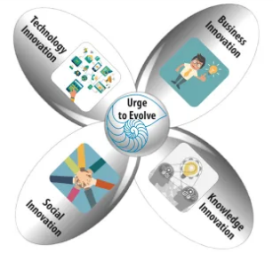

In team 4 of our design workshop, last Friday, I said something about concurrent and integrated cultivation of the following domains of OGM as an innovation architecture: social/cultural, business/organizational, knowledge/learning, and technology architectures.
That’s a framework that I’ve been using in my organization design work. Its emphasis is on their concurrent and integrated cultivation, the sweet spot of their overlap that can generate the highest payoff.

When the propeller blades start turning, they trigger a wind of continuous renewal and the ripple effects of innovation introduced in one area on the other areas.
We can think of the OGM innovation architecture as a vessel to carry and amplify the energy generated by OGM as an innovation ecosystem.
I visualize that innovation ecosystem as a rainforest of many projects initiatives, communities, organizations, which are all expressions of our individual and communal creativity.
Striving for simultaneously moving the edge of innovation in all those areas, OGM could reach a high level of coherence and synergy across the projects that we’ll be engaged in.
I guess, in our gang of many “big picture” thinkers and doers, there are already a good number of high-level organizing frameworks floating around. This one is not intended to compete with any of them. If it gains traction, it can be used as a corollary to them.


{kind=link}
{kind=link}